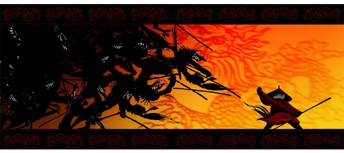

Art in 325 pages
Published in 2014, this book written by Ramin Zahed traces the biggest successes of the animation studio DreamWorks Animation, from "Ant" (1998) to "Home" (2014) through the "Shrek" (2001, 2004, 2007, 2010) or "Kung Fu Panda" (2008, 2011, the third one is released after the book). This book is very interesting when you love animated films, we have unpublished images, prototype drawings of the characters of the films of the studio, but also interviews with people who worked on these films.
To see extrait of the interviews, click here.

A dancing panda in traditional Chinese clothes
Interviews of feeling
In reading these interviews, we see their ideas, their successes, their frustrations as well as their hopes for the future films of DreamWorks Animation franchises. We can read in the interviews for the movie "Kung Fu Panda" that Melissa Cobb was happy that "people really identified with Po", which can be very difficult when this character is a panda and a kung fu master.
We can also read that she was disappointed not to be able to go to China before the first movie to " get a feel " of the Chinese culture. However, they were able to go before the second movie and the people there "couldn't believe that artisans from Glendale, California were able to reproduce their art, their spirituality and all the details of their culture in a cartoon.

Po in traditional clothes against wolves
Unpublished illustrations
Throughout the book, we have illustrations not taken from the films. These illustrations are very interesting to see what ideas the people who worked on the film, for example on page 164, we see Tai Lung in a different prison than the one in the film. It is not only the sets that have their first versions, but also the characters, as we can see on page 53 with Shrek.
 FR
FR


 THE MOVIE
THE MOVIE